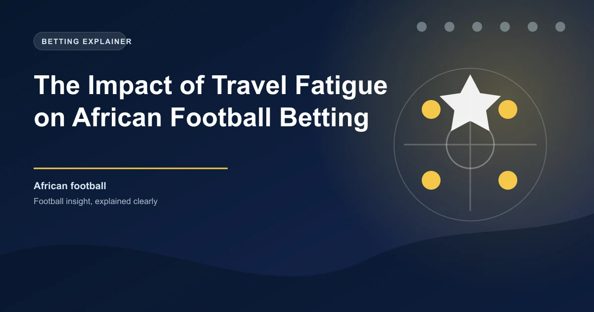

African football presents some of the most unique and underappreciated betting opportunities in world football. One of the most powerful yet overlooked factors driving results across the continent is travel fatigue. Unlike European leagues where domestic travel rarely exceeds a few hours by plane, African football involves journeys that can span 8,000 kilometres or more, cross multiple time zones, and take players from sea-level humid climates to arid high-altitude environments. Understanding how these travel demands affect team performance can give you a significant edge when placing bets on African football.
The African continent spans roughly 30.3 million square kilometres, making it the second-largest continent on Earth. When a club from Casablanca in Morocco travels to face a team in Cape Town, South Africa, they are covering approximately 9,000 kilometres each way. Compare that to a typical Premier League away trip of a few hundred kilometres by coach, and the scale of the challenge becomes immediately apparent.
Several specific factors make African travel uniquely exhausting for footballers:
The most exploitable pattern in African football betting emerges when clubs return from continental commitments. Teams involved in the CAF Champions League or Confederation Cup face a gruelling schedule of midweek continental matches followed by weekend domestic fixtures, often with minimal recovery time.
After returning from an away CAF Champions League or Confederation Cup tie involving significant travel, teams historically underperform in their next domestic league fixture. This is especially pronounced when the continental away leg was in a different climate zone or at altitude. Studies of the Nigerian Professional Football League, South African Premier Division, and Egyptian Premier League show that teams returning from long-distance continental travel win approximately 30-35% fewer points per game in their next domestic match compared to their season average.
This pattern is particularly strong in the first match back after a long continental trip. Teams are physically drained, mentally fatigued, and often rotate their squads to manage fatigue, which naturally weakens their domestic lineups. The combination of these factors creates a measurable dip in performance that savvy bettors can exploit.
Beyond club travel, international windows create additional fatigue patterns in African football. Players called up for national team duty with countries like Nigeria, Senegal, Cameroon, or Egypt face their own travel marathons. A Nigerian Premier League player called up for a World Cup qualifier might travel from Lagos to an away venue in another African country, play the match, and return with barely 48 hours before a crucial league fixture.
The data reveals several consistent patterns:
Not all African leagues experience travel fatigue equally. The impact varies based on geographic size, the travel demands of continental competitions, and the overall quality and depth of squads.
Nigerian Professional Football League (NPFL): Nigeria is Africa's most populous country and the NPFL features significant internal travel. However, the most impactful fatigue comes from CAF competition travel. Nigerian clubs in the Champions League regularly face trips to North Africa and East Africa. Post-continental NPFL results show a clear dip, especially for smaller clubs with thin squads.
South African Premier Division (PSL): South African clubs benefit from relatively modern travel infrastructure but face the unique challenge of being geographically isolated from the rest of African football. A trip from Johannesburg to Cairo is approximately 7,000 kilometres. The PSL schedule also runs over the European summer, creating additional fixture congestion when players return from national team duty.
Egyptian Premier League: Egyptian clubs, particularly Al Ahly and Zamalek, are perennial CAF Champions League contenders. Their continental schedules involve extensive travel to Sub-Saharan Africa. The Egyptian league frequently sees dropped points from these clubs in the immediate aftermath of away CAF fixtures, particularly when the trips involved West or Southern African destinations.
Moroccan Botola Pro: Moroccan clubs have been among the most successful in African continental competitions in recent years. Royal Air Maroc, Wydad Casablanca, and Raja Casablanca regularly deep-dive into CAF tournaments. Their travel demands are significant given Morocco's position in the northwest corner of Africa, requiring long flights to reach opponents in East, Central, and Southern Africa.
Understanding travel fatigue patterns gives you several actionable betting angles for African football:
The single most reliable travel fatigue strategy is to identify teams returning from significant away CAF fixtures and look for betting value against them in their next domestic match. Focus on matches where the travelling team faces an opponent who has had a full week of rest and preparation at home. This creates an asymmetric advantage where one team is physically compromised while the other is fresh.
When a top CAF contender returns from a long trip to face a lower-ranked domestic opponent, the home underdog becomes an attractive betting proposition. The fresh home team can press aggressively and exploit the fatigue of their opponents. Look for value in the double chance market (home win or draw) or in the over 1.5 goals market, as fatigued defences tend to concede more.
Teams returning from continental travel often rotate their squads heavily for domestic fixtures. Track team news carefully before placing bets. If a CAF contender is resting key players for an upcoming continental tie, the weakened domestic lineup creates additional value for opponents.
Fatigued teams often maintain their attacking quality for longer than their defensive solidity, especially in the first half. This creates opportunities in the BTTS market, as the fatigued team may still score but is more likely to concede. Matches involving recently-travelled teams frequently see both teams find the net.
Create a tracking spreadsheet for every team involved in CAF competitions. Record their next domestic fixture, the travel distance of their continental trip, the time between matches, and the result. After 15-20 data points, you will have a clear picture of which teams are most affected by travel fatigue and which are more resilient. This data-driven approach will refine your betting selections significantly.
Teams returning from travel fatigue tend to be involved in higher-scoring matches. The combination of defensive disorganisation, midfield fatigue, and the psychological effort of competing while tired leads to more goals. The over 2.5 goals market offers good value in matches where at least one team is returning from significant travel.
Not all travel in African football is equal. A 2-hour flight from Johannesburg to Durban is a fundamentally different proposition from a 9-hour flight from Casablanca to Dar es Salaam. Always assess the specific travel demands of each trip rather than treating all "away" fixtures as equal. The distance, number of time zones crossed, and climate difference are the key variables that determine fatigue impact.
Interestingly, the travel fatigue effect in African football is not limited to visiting teams. Home teams returning from continental travel also show measurable performance drops. This counters the common assumption that playing at home automatically negates travel effects. The physical recovery demands of long-distance travel do not disappear simply because the match is at a familiar venue. Players still need time for muscle recovery, sleep pattern normalisation, and mental refreshment, all of which require more than the 2-3 days typically available between continental and domestic fixtures.
This paradox creates additional betting opportunities, particularly when both teams in a domestic fixture are returning from continental commitments. In these scenarios, the team with the shorter or less demanding travel schedule tends to have a measurable advantage, even though both are technically "fatigued."
To systematically incorporate travel fatigue into your betting approach, consider building a simple scoring model. Assign points based on:
By quantifying these variables, you can move beyond intuition and make more informed betting decisions based on the real physiological impact of travel on African football teams.
Use WinFulltime's data-driven predictions to identify value in African football markets.
Explore PredictionsGet live predictions and in-play tips for matches happening right now.
View In-Play Tips Win
Win